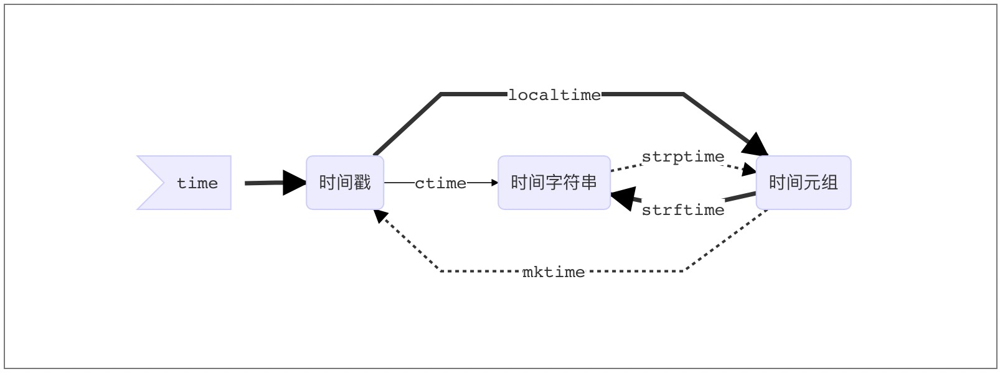

模块(Module)的概念
在计算机程序的开发过程中，随着程序代码越写越多，在一个文件里代码就会越来越长，越来越不容易维护。
为了编写可维护的代码，我们把很多函数分组，分别放到不同的文件里，这样每个文件包含的代码就相对较少，很多编程语言都采用这种组织代码的方式。在Python中，一个.py文件就称之为一个模块（Module）。
模块的好处
最大的好处是大大提高了代码的可维护性。
其次，编写代码不必从零开始。当一个模块编写完毕，就可以被其他地方引用。我们在编写程序的时候，也经常引用其他模块，包括Python内置的模块和来自第三方的模块。
模块的种类
- python标准库
- 第三方模块
- 应用程序自定义模块
注意：
- 使用模块还可以避免函数名和变量名冲突。相同名字的函数和变量完全可以分别存在不同的模块中，因此，我们自己在编写模块时，不必考虑名字会与其他模块冲突。
- 但是也要注意，尽量不要与内置函数名字冲突。
模块导入方法
import 语句
import module1[, module2[,... moduleN] |
当我们使用import语句的时候，Python解释器是怎样找到对应的文件的呢？答案就是解释器有自己的搜索路径，存在sys.path里。
['', '/usr/lib/python3.4', '/usr/lib/python3.4/plat-x86_64-linux-gnu', |
因此若像我一样在当前目录下存在与要引入模块同名的文件，就会把要引入的模块屏蔽掉。
from…import 语句
from modname import name1[, name2[, ... nameN]] |
这个声明不会把整个modulename模块导入到当前的命名空间中，只会将它里面的name1或name2单个引入到执行这个声明的模块的全局符号表。
From … import * 语句
from modname import * |
这提供了一个简单的方法来导入一个模块中的所有项目。然而这种声明不该被过多地使用。大多数情况， Python程序员不使用这种方法，因为引入的其它来源的命名，很可能覆盖了已有的定义。
运行本质
import test |
无论1还是2，首先通过sys.path找到test.py,然后执行test脚本（全部执行）;
区别是:
1会将test这个变量名加载到名字空间- 而
2只会将add这个变量名加载到名字空间
- 而
包(Package)
如果不同的人编写的模块名相同怎么办？为了避免模块名冲突，Python又引入了按目录来组织模块的方法，称为包（Package）。
举个例子，一个abc.py的文件就是一个名字叫abc的模块，一个xyz.py的文件就是一个名字叫xyz的模块。
现在，假设我们的abc和xyz这两个模块名字与其他模块冲突了，于是我们可以通过包来组织模块，避免冲突。方法是选择一个顶层包名：
引入了包以后，只要顶层的包名不与别人冲突，那所有模块都不会与别人冲突。现在，view.py模块的名字就变成了hello_django.app01.views，类似的，manage.py的模块名则是hello_django.manage。
请注意，每一个包目录下面都会有一个__init__.py的文件，这个文件是必须存在的，否则，Python就把这个目录当成普通目录(文件夹)，而不是一个包。__init__.py可以是空文件，也可以有Python代码，因为__init__.py本身就是一个模块，而它的模块名就是对应包的名字。
调用包就是执行包下的__init__.py文件
注意点（important）
第一点
手动将程序执行的路径加入sys.path
import sys,os |
第二点
if __name__=='__main__': |
“Make a .py both importable and executable”
如果我们是直接执行某个.py文件的时候，该文件中那么__name__ == '__main__'是True,但是我们如果从另外一个.py文件通过import导入该文件的时候，这时__name__的值就是我们这个py文件的名字而不是__main__。
这个功能还有一个用处：调试代码的时候，在if __name__ == '__main__'中加入一些我们的调试代码，我们可以让外部模块调用的时候不执行我们的调试代码，但是如果我们想排查问题的时候，直接执行该模块文件，调试代码能够正常运行！
第三点
/Users/yuanhao/Desktop/whaterver/project/web/module/cal.py
def add(x,y): |
/Users/yuanhao/Desktop/whaterver/project/web/module/main.py
import cal #from module import cal |
/Users/yuanhao/Desktop/whaterver/project/web/bin.py
from module import main |
from module import main改成from . import main同样可以，这是因为bin.py是我们的执行脚本，sys.path里有bin.py的当前环境。即/Users/yuanhao/Desktop/whaterver/project/web这层路径，无论import what, 解释器都会按这个路径找。
所以当执行到main.py时，import cal会找不到，因为sys.path里没有/Users/yuanhao/Desktop/whaterver/project/web/module这个路径，而from module/. import cal时，解释器就可以找到了。
time模块
三种时间表示
在Python中，通常有这几种方式来表示时间：
- A时间戳(timestamp) : 通常来说，时间戳表示的是从1970年1月1日00:00:00开始按秒计算的偏移量。我们运行“type(time.time())”，返回的是float类型。
- B格式化的时间字符串
- C元组(struct_time):struct_time元组共有9个元素共九个元素:(年，月，日，时，分，秒，一年中第几周，一年中第几天，夏令时)
import time |
三种时间的关系
graph LR; |

random模块
| 方法 | 说明 |
|---|---|
random.random() |
用于生成一个0到1的随机浮点数：0<= n < 1.0 |
random.uniform(a,b) |
用于生成一个指定范围内的随机符点数，两个参数其中一个是上限，一个是下限。如果a > b，则生成的随机数n: a <= n <= b。如果 a <b， 则 b <= n <= a |
random.randint(a, b) |
用于生成一个指定范围内的整数。其中参数a是下限，参数b是上限，生成的随机数n: a <= n <= b |
random.randrange([start], stop[, step]) |
从指定范围内，按指定基数递增的集合中 获取一个随机数 |
random.choice(sequence) |
从序列中获取一个随机元素 |
random.shuffle(x[, random]) |
用于将一个列表中的元素打乱,即将列表内的元素随机排列 |
random.sample(sequence, k) |
从指定序列中随机获取指定长度的片断并随机排列。注意：sample函数不会修改原有序列。 |
验证码
import random |
os模块
os模块是与操作系统交互的接口
常用方法
| 方法 | 说明 | |
|---|---|---|
| 目录 | os.getcwd() |
获取当前工作目录，即当前python脚本工作的目录路径 |
os.chdir("dirname") |
改变当前脚本工作目录；相当于shell下cd | |
os.curdir |
返回当前目录 | |
os.pardir |
获取当前目录的父目录字符串名 | |
os.makedirs('dirname1/dirname2') |
可生成多层递归目录 | |
os.removedirs('dirname1') |
若目录为空，则删除，并递归到上一级目录，如若也为空，则删除，依此类推 | |
os.mkdir('dirname') |
生成单级目录；相当于shell中mkdir dirname | |
os.rmdir('dirname') |
删除单级空目录，若目录不为空则无法删除，报错；相当于shell中rmdir dirname | |
os.listdir('dirname') |
列出指定目录下的所有文件和子目录，包括隐藏文件，并以列表方式打印 | |
os.remove() |
删除文件 | |
os.rename("oldname","newname") |
重命名文件/目录 | |
os.stat('path/filename') |
获取文件/目录信息 | |
| 符号 | os.sep |
输出操作系统特定的路径分隔符，win下为”\“,Linux下为”/“ |
os.linesep |
输出当前平台使用的行终止符，win下为”\t\n”,Linux下为”\n” | |
os.pathsep |
输出用于分割文件路径的字符串 | |
os.name |
输出字符串指示当前使用平台。win->’nt’; Linux->’posix’ | |
| 执行系统命令 | os.system("bash command") |
运行shell命令，直接显示 |
os.environ |
获取系统环境变量 | |
| 路径 | os.path.abspath(path) |
返回path规范化的绝对路径 |
os.path.split(path) |
将path分割成目录和文件名二元组返回 | |
os.path.dirname(path) |
返回path的目录。其实就是os.path.split(path)的第一个元素 | |
os.path.basename(path) |
返回path最后的文件名。如何path以／或\结尾，那么就会返回空值。即os.path.split(path)的第二个元素 | |
os.path.exists(path) |
如果path存在，返回True；如果path不存在，返回False | |
os.path.isabs(path) |
如果path是绝对路径，返回True | |
os.path.isfile(path) |
如果path是一个存在的文件，返回True;否则返回False | |
os.path.isdir(path) |
如果path是一个存在的目录，则返回True;否则返回False | |
os.path.join(path1[, path2[, ...]]) |
将多个路径组合后返回，第一个绝对路径之前的参数将被忽略 | |
os.path.getatime(path) |
返回path所指向的文件或者目录的最后存取时间 | |
os.path.getmtime(path) |
返回path所指向的文件或者目录的最后修改时间 |
sys模块
| 方法 | 说明 |
|---|---|
sys.argv |
命令行参数 |
sys.exit(n) |
退出程序 |
sys.version |
获取Python解释程序的版本信息 |
sys.maxint |
最大的整型 |
sys.path |
返回模块的搜索路径，初始化时使用PYTHONPATH环境变量的值 |
sys.platform |
返回操作系统平台名称 |
进度条
import sys, time |
缓冲区的刷新方式：
- flush()刷新缓存区
- 缓冲区满时，自动刷新
- 文件关闭或者是程序结束自动刷新。
当我们打印一些字符时，并不是调用print函数后就立即打印的。一般会先将字符送到缓冲区，然后再打印。这就存在一个问题，如果你想等时间间隔的打印一些字符，但由于缓冲区没满，不会打印。就需要采取一些手段。如每次打印后强行刷新缓冲区sys.stdout.flush()。
json模块
重点掌握
如果我们要在不同的编程语言之间传递对象，就必须把对象序列化为标准格式，比如XML，但更好的方法是序列化为JSON，因为JSON表示出来就是一个字符串，可以被所有语言读取，也可以方便地存储到磁盘或者通过网络传输。JSON不仅是标准格式，并且比XML更快，而且可以直接在Web页面中读取，非常方便。
JSON表示的对象就是标准的JavaScript语言的对象，JSON和Python内置的数据类型对应如下：
| json类型 | python类型 |
|---|---|
{} |
dict |
[] |
list |
string |
str |
123.45 |
int/float |
true/false |
True/Flase |
null |
None |
import json |
常用：
json.dumps(a, indent=2, ensure_ascii=False)显示中文- 与数据库交互时，时间和浮点数需要特殊处理：
import json |
pickle模块
从来没有用过
Pickle的问题和所有其他编程语言特有的序列化问题一样，就是它只能用于Python，并且可能不同版本的Python彼此都不兼容，因此，只能用Pickle保存那些不重要的数据，不能成功地反序列化也没关系。
import pickle |
shelve模块
- shelve模块比pickle模块简单，只有一个open函数，返回类似字典的对象，可读可写；
- key必须为字符串，而值可以是python所支持的数据类型。
import shelve |
writeback：默认为False。当设置为True以后，shelf将会将所有从DB中读取的对象存放到一个内存缓存。当我们close()打开的shelf的时候，缓存中所有的对象会被重新写入DB。
writeback方式有优点也有缺点。
优点是减少了我们出错的概率，并且让对象的持久化对用户更加的透明了；但这种方式并不是所有的情况下都需要，首先，使用writeback以后，shelf在open()的时候会增加额外的内存消耗，并且当DB在close()的时候会将缓存中的每一个对象都写入到DB，这也会带来额外的等待时间。因为shelve没有办法知道缓存中哪些对象修改了，哪些对象没有修改，因此所有的对象都会被写入。
xml模块
xml是实现不同语言或程序之间进行数据交换的协议，跟json差不多，但json使用起来更简单，不过，古时候，在json还没诞生的黑暗年代，大家只能选择用xml呀，至今很多传统公司如金融行业的很多系统的接口还主要是xml。
xml的格式如下，就是通过<>节点来区别数据结构的:
|
xml协议在各个语言里的都 是支持的，在python中可以用以下模块操作xml：
import xml.etree.ElementTree as ET |
自己创建xml文档：
import xml.etree.ElementTree as ET |
configpaser模块
一般软件的常见文档格式如下：
[DEFAULT] |
如果想用python生成一个这样的文档怎么做呢？
import configparser |
yaml模块
重点掌握
自研小工具时可以将配置文件的格式设置为yaml， 例如：
version: 1 |
读取配置文件时：
import yaml |
hashlib模块
用于加密相关的操作，3.x里代替了md5模块和sha模块，主要提供 SHA1, SHA224, SHA256, SHA384, SHA512 ，MD5 算法。
import hashlib |
以上加密算法虽然依然非常厉害，但时候存在缺陷，即：通过撞库可以反解。所以，有必要对加密算法中添加自定义key再来做加密。
import hashlib |
python 还有一个 hmac 模块，它内部对我们创建 key 和 内容 再进行处理然后再加密:
import hmac |
subprocess模块
重点掌握
当我们需要调用系统的命令的时候，最先考虑的os模块。用os.system()和os.popen()来进行操作。但是这两个命令过于简单，不能完成一些复杂的操作，如给运行的命令提供输入或者读取命令的输出，判断该命令的运行状态，管理多个命令的并行等等。这时subprocess中的Popen命令就能有效的完成我们需要的操作。
subprocess模块允许一个进程创建一个新的子进程，通过管道连接到子进程的stdin/stdout/stderr，获取子进程的返回值等操作。
logging模块
重点掌握
灵活配置日志级别，日志格式，输出位置
version: 1 |
re模块
re是一个用来处理正则表达式的库
| 方法 | 说明 |
|---|---|
| compile | 将一个正则表达式“编译”。编译后的正则表达式对象比直接运行拥有更快的速度。 |
| search | 在一系列文字中搜索。 |
| match | 在一系列文字中匹配。 |
| split | 利用正则将文字分裂为多个部分。 |
| findall | 找到所有符合正则的子字符串。 |
| sub | 对文本进行替换。 |
argparse模块
需要开发一些小工具时的必要第三方包！
UUID模块
- Python官方Doc：《20.15. uuid — UUID objects according to RFC 4122》
- UUID的算法介绍：《A Universally Unique IDentifier (UUID) URN Namespace》
概述
UUID是128位的全局唯一标识符，通常由32字节的字符串表示。它可以保证时间和空间的唯一性，它通过MAC地址、时间戳、命名空间、随机数、伪随机数来保证生成ID的唯一性。
算法
UUID主要有五个算法，也就是五种方法来实现：
uuid1()——基于时间戳
由MAC地址、当前时间戳、随机数生成。可以保证全球范围内的唯一性，但MAC的使用同时带来安全性问题，局域网中可以使用IP来代替MAC。
uuid2()——基于分布式计算环境DCE（Python中没有这个函数）
算法与uuid1相同，不同的是把时间戳的前4位置换为POSIX的UID。实际中很少用到该方法。
uuid3()——基于名字的MD5散列值
通过计算名字和命名空间的MD5散列值得到，保证了同一命名空间中不同名字的唯一性，和不同命名空间的唯一性，但同一命名空间的同一名字生成相同的uuid。
uuid4()——基于随机数
由伪随机数得到，有一定的重复概率，该概率可以计算出来。
uuid5()——基于名字的SHA-1散列值
算法与uuid3相同，不同的是使用 Secure Hash Algorithm 1 算法
使用建议
- Python中没有基于DCE的，所以uuid2可以忽略；
- uuid4存在概率性重复，由无映射性，最好不用；
- 若在Global的分布式计算环境下，最好用uuid1；
- 若有名字的唯一性要求，最好用uuid3或uuid5。
参考
```